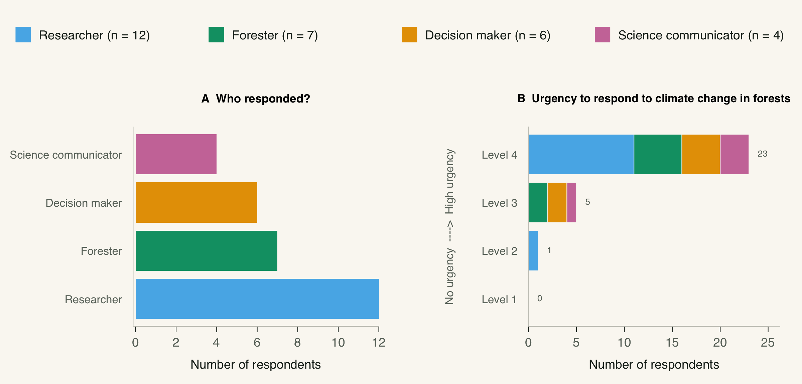
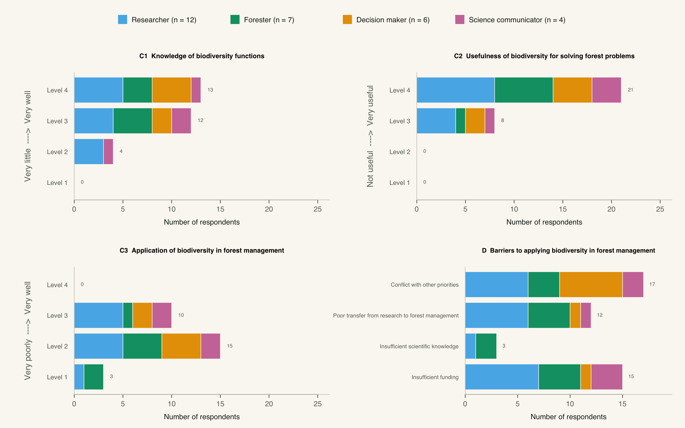

WaldDialog 2026 · Conference survey
Survey
results
Attitudes towards the role of forest biodiversity in responding to climate change


Results now available. Explore the poster and responses from 29 WaldDialog participants below.
The findings
10 September 2026

What we are learning
Twenty-nine participants shared their professional background, perceived urgency, understanding of biodiversity functions, and views on how biodiversity knowledge is used in forest management. The figures also show which barriers they identified, with responses grouped by profession.
These results offer an exploratory snapshot rather than a representative assessment. Comparisons among professions are descriptive—particularly for the smaller groups—and will become more informative as the survey gathers additional responses.
The poster will continue its journey to other related conferences and workshops to collect more responses. 🌲


Continue exploring